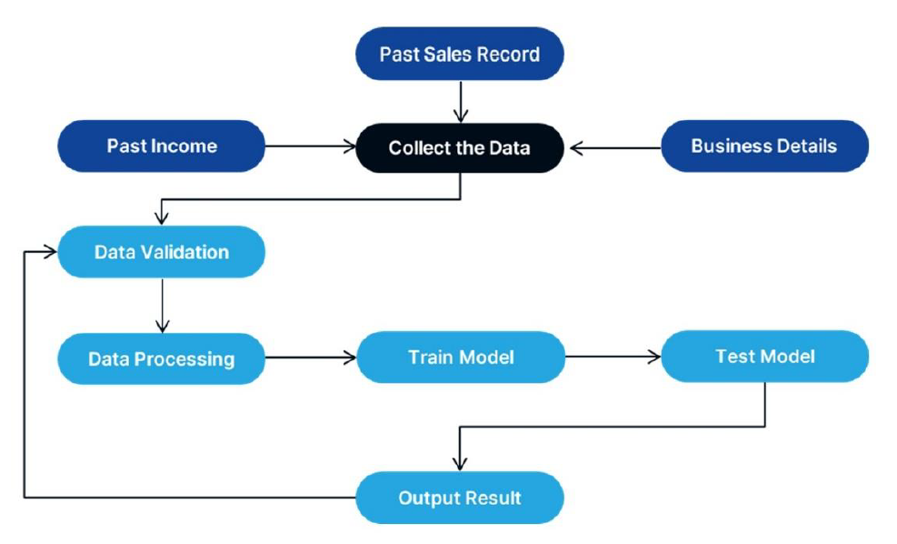
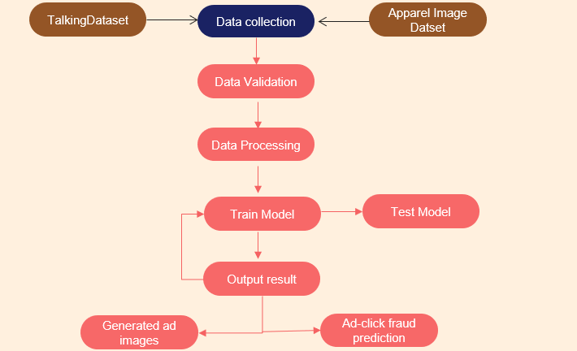
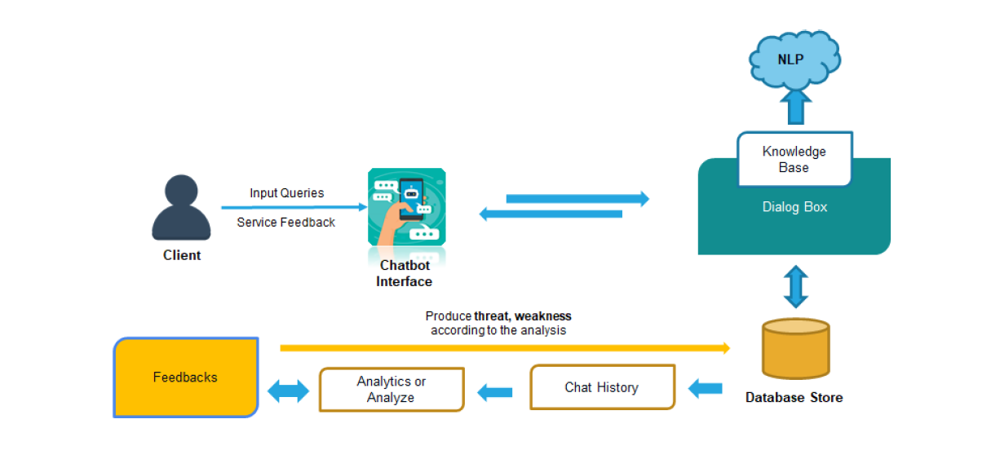

A Research on Solutions for Small Business owners to overcome their challenges and improve Sales and Income using Artificial Intelligence and Machine Learning
Website created by SalFix Team
SalFix © 2021. All Rights Reserved
Owners can join the service by registering for the app and becoming members. The following services are provided by "SalFix" to its customers.
Using the Collaborative and Filtering Technique, this program will suggest the trendiest item on the market.
This will assist the owner by giving all the business solution. Solution includes the sales prediction, income prediction, nature of the business, and start-up cost of a new business.
Using Artificial Intelligence, this solution will handle all of your advertising needs.
Owners no longer have to be concerned about consumer communication thanks to this service. With this plugin, you can have a chatbot that responds to frequently asked questions.
Develop a Business Intelligence Dashboard
The figure below demonstrates the steps to forecast the following year prediction. There are six steps to develop the machine leaning model.
Most of the owners keep their records manually. The system development starts with data collection. These data include:
After the data collection is completed, the data validation part will begin. In this step, data will be filtered as qualitative and quantitative. Only the Qualitative and Structured data will be used from this step forward. In data validation collected data will be check with different types of validation
After the validation process, the data will start to process. In this step, data will convert into usable information. This process is critical. These data need to be processed carefully. If not, it will affect the end product or the final output. The processed data will use to train the model. When training the model, it should train with various algorithms and find the correct, accurate one. The chosen algorithm is LSTM (Long-Short term memory)
In summary, as input, the Business Intelligence Dashboard will use the business's past sales and income records to perform the predictive analysis task. To perform the task mentioned above, training a model is needed to train the model, machine learning algorithm will use. If the owner inputs a large amount of data, the model will give more accurate results. The Long Short-Term Memory algorithm does the model training. When training the model, collected data will be divided into two categories. One is the training data set, and another is the test dataset. The model will be trained by the training data set. The training data set will be provided by the business owner. There is no separate static model for this. The model will be dynamically stored in the ram.
Every time a business owner uploads the sales data a new model will be trained. The training dataset is 80% of the collected data. After training the model, the model will predict the renaming of 20% of the dataset. The authors can perform the renaming of 20% manually. The model predicted 20%, and the human performed 20% may have different accuracy; the Mean Squared Error algorithm will check the model's accuracy. Finally, All the records are saved in a database with a unique identification number. When it comes to providing predictions to the new owners, these sales and income records will be used.
Develop an Automated ad image generation system
The system has 3 objectives, personalisation, real time and scalable ad image creation and an integrated ad-click fraud detection model.
Customer’s online lifestyle and behavior are thoroughly explored and mined to obtain individualized information. With GPS and GIS site information, the prefix- scan algorithm is used to extract frequent sequential activity patterns in daily life. With travel patterns, customer’s daily behavioral trajectories are explored. Through all of this analysis, a comprehensive user profile is obtained from both online sources such as Kaggle.com and Google clouds’ ML-ready-data for personalization. And offline sources such as Customer-feedback questionnaires obtained from small businesses. The consumer profiles will have information such as gender, age, origin, hobbies, purchasing power and recent consumption.
Analyse and filter data
Using an architecture based on a weighted Dempster-Shafer framework, this can filter inconsistent data obtained by different classification approaches. The partial graph profile algorithm is used to profile customers without mistakes.
Create a model
The label values of consumers at various digital touchpoints are analysed to construct a model that matches ads to customers. This model is utilized to clearly analyse individual target consumers who fit into the advertisement.
Creating the Ad images
The apparel image dataset is preprocessed and Generative Adversarial Networks (GAN) algorithm is applied to the model to generate various new trained images.
The dataset is highly imbalanced. Therefore, each attribute contributing to the target variable is analysed and a model is implemented using Logistic Regression algorithm to detect whether an ad click is fraud or legitimate. The target variable is binary and takes values as 0 and 1 for legitimate click and fraud clicks respectively.
The below figure represents the method flow taken in developing the automated ad image generation system.
Develop a Chatbot and Feedback system
In this system, it is doing the analysis according to the given feedback by customers. Chat history giving extra hints or factors to analyze the feedback. Once the feedback analyzed according to the ‘SWOT’ concept, system will hint the feedback output to the system.
Input the queries through chatbot dialog box and it forward to the knowledge base with help of natural language process and interact with system database store and feedback calculating by the chat history and analyze as the feedback. Provide the threats and weaknesses of business through the chatbot and giving a report. The chatbot service helps to answer small business hesitant questions. According to the chatbot methodology, Artificial Intelligence contributes more techniques to build communication services. The chatbot plugin uses Natural Language Processing (NLP). Customer experience and review are some essential parts of keeping the business running. According to that, a chatbot is a great platform to provide 24x7 days. Here, the chatbot brings a solution with frequently asked questions, providing key business ideas to small business owners and provide feedback analysis with the help of SWOT analysis.
The above figure describes that how chatbot and feedback systems work together. User and system involving direct conversation and based on the conversation, feedback system involves using resources or data and delivering business predicted SWOT based report. According to that, analyze and provide an instant solution to client with some extra features. such as providing frequently asked questions (FAQ), Business Tricks and Tips and feedback reports.
Data collection part doing in two ways first. Collecting from a real-time user and collecting data from the internet. A real-time user involved in both chatbot and feedback model. Conversation facility provides a real-time solution that covers quick and automatic replies and understanding the real issues with the solution.
A Research on Solutions for Small Business owners to overcome their challenges and improve Sales and Income using Artificial Intelligence and Machine Learning
CONTACT US
SLIIT Malabe Campus, Colombo, SriLanka
0114444333
salfixlk@gmail.com
SUBSCRIBE NEWSLETTER
Website created by SalFix Team
SalFix © 2021. All Rights Reserved